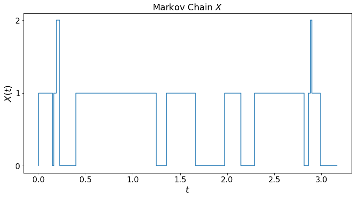
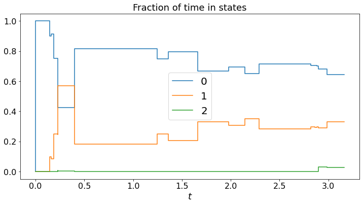

Networks B¶
from IPython.core.display import HTML
import numpy as np
import matplotlib
import scipy
from scipy.stats import norm
from scipy.stats import binom
import pandas as pd
params = {'figure.figsize':(12,6), # These are plot parameters
'xtick.labelsize': 16,
'ytick.labelsize':16,
'axes.titlesize':18,
'axes.labelsize':18,
'lines.markersize':4,
'legend.fontsize': 20}
matplotlib.rcParams.update(params)
from matplotlib import pyplot as plt
import random
from ipywidgets import *
import numpy.linalg
from IPython.display import display
from IPython.core.display import HTML
from notebook.nbextensions import enable_nbextension
%matplotlib inline
print('The libraries loaded successfully')
The libraries loaded successfully
This chapter explains continuous-time Markov chains and queuing networks.
Continuous-Time Markov Chains¶
Consider the Markov chain with the state transition rates shown in the figure below:
We simulate the Markov chain, plot the trajectory X[t], and the fraction of time in the different states.
Note that the fractions of time converge. Is this the case for any continuous-time Markov chain?
def dummy(Td):
global T
T = float(Td)
Td = widgets.Dropdown(options=['1', '2', '3', '4','5','6','7','8'],value='3',description='T',disabled=False)
z = widgets.interactive(dummy, Td = Td)
display(z)
matplotlib.rcParams.update(params)
def discreteRV(x,p): # here x = [x[0],...,x[K-1]], p = [p[0], ..., p[K-1]]
# returns a random value equal to x[k] with probability p[k]
z = 0
K = len(x)
P = np.zeros(K)
for k in range(K):
P[k] = sum(p[:k]) # P[0] = p[0], p[1] = p[1], P[2] = p[0] + p[1], ..., P[K-1] = p[0] + ... + p[K-1] = 1
U = np.random.uniform(0,1) # here is our uniform RV
for k in range(1,K):
found = False
if U < P[k]:
z = x[k-1]
found = True
break
if not found:
z = x[K-1]
return z
def MC_demo(T): # T = 'real' simulation time;
global jump_times, states, M
Q=np.array([[-6,6,0],[7,-10,3],[2,5,-7]])
X0 = 0
M = len(Q) # number of states
x = np.arange(M) # set of states
p = np.zeros(M)
jump_times = [0] # list of jump times
states = [X0] # initial state
time = 0
while time < T:
state = states[-1] # current state
rate = - Q[state,state] # rate of holding time of current state
time += np.random.exponential(1/rate) # add holding time of current state
for i in range(M):
if i == state:
p[i] = 0
else:
p[i] = Q[state,i]/rate
p = list(p)
next_state = discreteRV(x,p)
jump_times.append(time)
states.append(next_state)
labels = [str(item) for item in x]
plt.step(jump_times,states)
plt.yticks(x, labels)
plt.ylabel("$X(t)$")
plt.xlabel("$t$")
plt.title("Markov Chain $X$")
plt.show()
N = len(states)
total_times = np.zeros([M,N])
average_times = np.zeros([M,N])
for n in range(1,N):
state = states[n-1]
for i in range(M):
total_times[i,n] = total_times[i,n-1] + (jump_times[n] - jump_times[n-1])*(state == i)
average_times[i,n] += total_times[i,n]/jump_times[n]
for i in range(M):
plt.step(jump_times,average_times[i,:],label=str(x[i]))
plt.xlabel("$t$")
plt.title("Fraction of time in states")
plt.legend()
plt.show()
MC_demo(T)


For this Markov chain, we can calculate the average time in the different states.